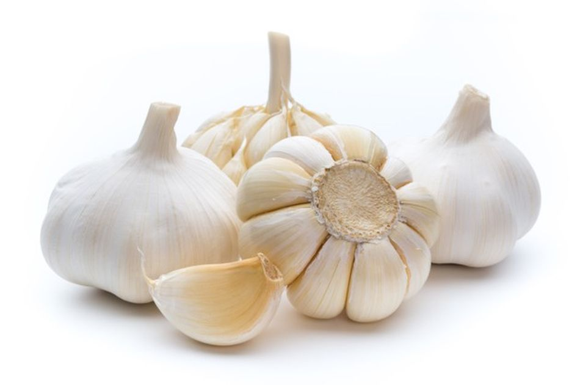

Bawang putih populer dalam dunia pengobatan herbal sejak zaman dahulu kala. Sebelum Anda konsumsi, kenali dulu efek samping dan manfaat bawang putih berikut ini. Bawang putih populer di tanah air. Tidak heran, bawang putih merupakan salah satu bumbu yang wajib ada di dapur. Umumnya, bawang putih digunakan sebagai bumbu untuk menambah nikmat dan gurih makanan. Bawang putih tidak hanya bermanfaat sebagai bumbu dapur. Bawang putih juga bermanfaat sebagai obat herbal yang bisa menumpas banyak penyakit. Mengutip dari buku Penyakit Asam Urat Kandas Berkat Herbal, karya Ersi Herlina STP, dalam 100 gram bawang putih mengandung:
|
 | |
| asfafa |